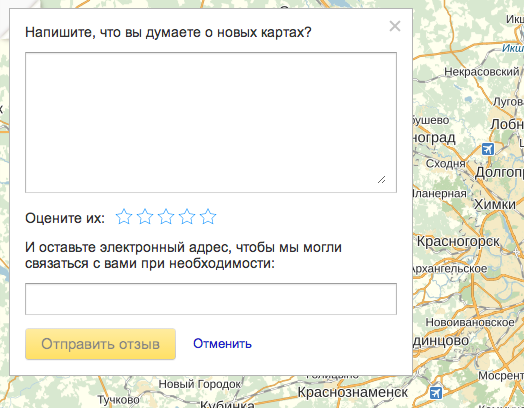
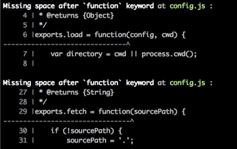

JSCS: JavaScript Code Style
When nine months ago I wrote a small console utility for myself, I didn't suspect that soon it would become a serious and unique in its class tool, which would be used even by such famous teams as jQuery, Bootstrap and Angular. Now, as I'm writing this article, my project has 1010 stars on GitHub, and I'm very happy to think that so many people could make their work more comfortable with the help of my idea.
The story of this project start with my personal pain.
Not too long before that moment I transferred from one team of Yandex.Maps to another and was gradually adjusting to work on a new (to me) project. Everything was good, I really liked the new project, but the code style used by the guys on my new team was just too different from the code style that me and the guys from my previous team used. At one point, I was visited by the ridiculous thought that the code style of the new group was written directly opposite to the code style of the previous group specifically to confuse me.
For example...
Once, I finished developing a new visual block and sent it for code review, so that the guys could look through it for defects in logic. This is how it looked then.

The image is a simple "rate our service" form, with a text input field, a star rating and an email input.
In this review is where disappointment was waiting.
Imagine, I spent an entire week making a new feedback form, debugging, getting the code in order. But the first remark I got in the review was "There's no space after function". And then the same thing in five other places!?
Please understand me. I developed the product, worked hard. Thought up non-trivial logic which ended up with no mistakes. But I couldn't pass the review because I forgot to put a space after the word "function"?! I didn't like that. I wanted for the reviewers to pay attention to my code, to its architecture, to defects in logic, not to violations of the code style.
I became sad. After that there was a second similar review, and the same situation with the space after "function". Them and their space! And in that moment I fully understood that it can't go on like this. I became mad.
This is how JavaScript Code Style — JSCS for short — a tool that will notify me of all my code style violations before I send the code off for review, was born. For a long time the tool had just one rule, which checked whether or not there was a space after "function". And this was enough for me to feel happy. If it so happened that I forgot to insert the ill-fated space, JSCS would alert me of it before every commit.

For some time I was the only one to use the tool, without sharing with anyone. Why would I? I solved my problems and relaxed. But soon it turned out that many of my colleagues suffered from the same problems with code style. It's just that it wasn't the space after function that they forgot, but for example adding a newline at the end of a file. So I shared with them.
JSCS started to proliferate within Yandex. It started to rapidly grow new rules. Different commands, different code styles — new and interesting rules appeared, for example, forbidden ambiguous type declarations (!!x — bad, Boolean(x) — good). Shortly thereafter I put JSCS on GitHub. And then the rules started to be added by external (with respect to Yandex) people. And suddenly the stars flowed.
If you ask me what caused this explosive growth in popularity of this project, I'll answer.
Firstly, an analogously complete tool didn't exist at that time, and I'm not certain that it does now. The second reason is in that the tool exists to solve one very small problem, understood by everyone, relevant for many. And the third (and in my opinion very important reason) is that I created a tool with a simple and obvious programming architecture. That is, the tool doesn't try to solve a bunch of diverse problems, it does a single thing but does it very well.
Why didn't we expand jshint, since jshint used to have a series of rules for code style checking?
Those rules were incomplete, chaotic, and jshint's developers wanted to get rid of them. This is why in the JSCS repo issue 102 appeared, where Mike Sherov started to move the code style rule support from jshint to JSCS. Right now, in the new version of jshint there isn't a single rule for code style, and JSCS became the only complete tool that solves this problem.
Also, two full-time project maintainers appeared. They turned out to be guys who work on jQuery core — Mike Sherov mikesherov and Oleg Gaidarenko markelog, they sift through a massive collection of tickets which come from users. And those stars that the project earned on GitHub are chiefly their accomplishment. Thank you so much, guys!
The GitHub project page: https://github.com/mdevils/node-JSCS. On this page more than sixty rules are described, with the help of which you can tune the validation of code style in your project.
Come by, use it, you might even like it.